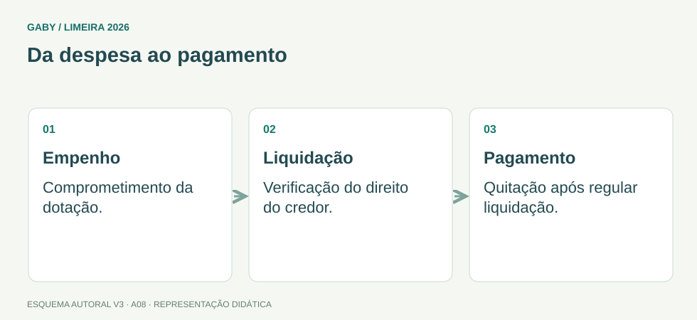

Objetivos do módulo
- Montar previsões simples de gastos.
- Distinguir previsão, realizado e saldo.
- Entender lógica básica de prestação de contas e documentação comprobatória.
Da despesa ao pagamento

Descrição em texto do esquema
- Empenho: Comprometimento da dotação.
- Liquidação: Verificação do direito do credor.
- Pagamento: Quitação após regular liquidação.
Oficina visual · aplique o esquema
Um orçamento era R$ 2.000 e o gasto foi R$ 1.700. Qual o saldo e qual o percentual utilizado?
Atividade autoral complementar da V3. Registre sua resposta; a resolução está no arquivo de gabarito e revisão.
Mapa do conteúdo
1. Levantamento de dados
Antes de prever gastos, identifique quantidades, preços, periodicidade e histórico. Um cálculo simples pode ser “quantidade × custo unitário × número de períodos”. A qualidade da previsão depende da qualidade dos dados.
2. Previsão de materiais
Consumo médio ajuda a estimar necessidade, mas deve ser ajustado por eventos sazonais, mudança de demanda, estoque existente e tempo de reposição. Previsão não é certeza: é estimativa fundamentada.
3. Gastos com pessoal
Em questões básicas, podem aparecer multiplicações de quantidade de pessoas, valores e períodos. Na prática, gastos de pessoal têm componentes legais adicionais; o edital pede noções e cálculos básicos, portanto foque na estrutura do cálculo apresentado.
4. Previsto x realizado
Comparar previsto e realizado identifica desvios. Variação absoluta = realizado−previsto; percentual = variação/previsto×100%. Desvio deve ser analisado, não automaticamente considerado erro.
5. Prestação de contas
Prestação de contas reúne registros e documentos para demonstrar origem, aplicação e resultado dos recursos/valores sob responsabilidade da unidade. Comprovantes devem ser íntegros, coerentes e vinculados ao fato registrado.
6. Conferência
Conferência aritmética, documental e de autorização reduz erros. Totais devem bater com subtotais e documentos; divergências precisam ser justificadas/corrigidas conforme procedimento.
Exemplos resolvidos passo a passo
Exemplo 1
Situação: Setor consome 20 caixas/mês a R$35. Previsão de 6 meses?
Exemplo 2
Situação: Previsto R$10.000; realizado R$11.500. Desvio?
Exemplo 3
Situação: Nota comprova valor, mas não está vinculada ao pedido/recebimento.
Pegadinhas e erros frequentes
- Confundir previsão com gasto efetivo.
- Calcular percentual de desvio sobre realizado em vez do previsto.
- Guardar comprovante sem relação com o fato.
- Somar valores sem conferir unidade/período.
Resumo de prova
- Previsão usa quantidade, custo e período.
- Compare previsto x realizado.
- Desvio percentual usa previsto como base.
- Prestação de contas exige documentação coerente e rastreável.
- Conferência é numérica e documental.
Exercícios do módulo
Resolva sem consultar o arquivo de gabarito. As questões são autorais e construídas para treinar os conceitos do edital.
- R$600
- R$200
- R$60
- R$2.000
Fontes: Brasil — Lei 4.320/1964 · Brasil — Constituição Federal, texto compilado.
- 10% apenas
- 5.000
- −500
- 500
Fontes: Brasil — Lei 4.320/1964 · Brasil — Constituição Federal, texto compilado.
- 50%
- 110%
- 10%
- 5%
Fontes: Brasil — Lei 4.320/1964 · Brasil — Constituição Federal, texto compilado.
- ocultar desvios
- demonstrar e comprovar aplicação de recursos
- eliminar registros
- substituir notas fiscais
Fontes: Brasil — Lei 4.320/1964 · Brasil — Constituição Federal, texto compilado.
- estimativa fundamentada
- valor sempre exato
- documento de arquivo permanente por definição
- apenas opinião
Fontes: Brasil — Lei 4.320/1964 · Brasil — Constituição Federal, texto compilado.
- ser ignorado sempre
- ser descartado
- ser duplicado
- ser considerado na previsão de compra
Fontes: Brasil — Lei 4.320/1964 · Brasil — Constituição Federal, texto compilado.
- apenas gramática
- apenas horário
- coerência entre registros e comprovantes
- apenas soma
Fontes: Brasil — Lei 4.320/1964 · Brasil — Constituição Federal, texto compilado.
- dispensa recebimento
- fragiliza a prestação
- é suficiente sempre
- substitui autorização
Fontes: Brasil — Lei 4.320/1964 · Brasil — Constituição Federal, texto compilado.
- alterar consumo esperado
- ser ignorada sempre
- eliminar cálculo
- substituir estoque
Fontes: Brasil — Lei 4.320/1964 · Brasil — Constituição Federal, texto compilado.
- é sempre fraude
- é sempre erro de soma
- nunca importa
- deve ser analisado
Fontes: Brasil — Lei 4.320/1964 · Brasil — Constituição Federal, texto compilado.
Quando terminar, abra Assistente Administrativo 08 - Orçamento, Cálculos e Prestação de Contas - Gabarito e Revisão.
Checklist de domínio
- ☐ Montar previsões simples de gastos.
- ☐ Distinguir previsão, realizado e saldo.
- ☐ Entender lógica básica de prestação de contas e documentação comprobatória.
Meta do módulo: 80% ou mais nas questões, sem depender de consulta.
Referências e conteúdos auxiliares
- Brasil — Lei 4.320/1964Normas gerais de direito financeiro; arts. 58, 62 e 63 para etapas da despesa.
- Brasil — Constituição Federal, texto compiladoLeia os dispositivos indicados no módulo e suas remissões no texto oficial.
Referências externas de apoio consultadas para a V3 em 27/09/2026. A origem das questões é o material autoral do projeto; estes links não indicam que uma instituição publicou ou validou os exercícios. As páginas externas precisam de internet. Em informática, confira a versão do programa; em legislação, observe o recorte e as regras de atualização do edital.